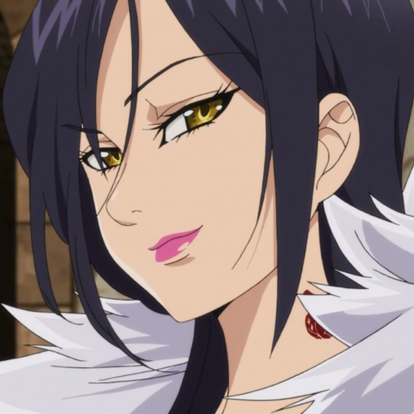

|
Méliodas, le dragon de la colère
- Capitaine des 7 péchés capitaux.
- Gérant d'une taverne mobile, le "Boar Hat" sur le dos d'un cochon géant, "Mama Hawk".
- Fils du Roi des Démons il est aussi connu comme étant un traite au sein de son clan.
- Ancien chef d'un escadron démoni aque, les 10 commandements.
- Victime d'une malédiction infliger par son père qui lui empêche de périr.
- Malgrès son apparance enfantine, Meliodas est en réalité âgé de plus de 3000 ans.
|
 |
Ban, le renard de l'avarice
- Vice capitaine des 7 péchés capitaux et meilleur ami de Méliodas.
- Après ses retrouvailles avec Méliodas il devient le chef cuisinier du Boar Hat.
- Etant orphelin, il fut recueilli par un bandit, Zhivago, qui lui apprit à voler.
- Après un combat contre un démon, Elaine lui fit boire l'eau de la fontaine de Jovence afin de le rendre immortel.
- A cause de son immortalité Ban parrait avoir la vingtaine alors qu'il est agé de 45 ans.
|
|
King, le grizzly de la paresse
- King, de son vrai nom Arlequin est le roi des Fées.
- King possède une double apparance, celle des fées et la forme humaine.
- Il a une petite soeur, Elaine qui s'occupe de proteger la fontaine de Jovence.
- Il est considéré comme un traitre car il n'a pas été là pour protéger sa forêt et sa soeur.
- Au cours de l'histoire on apprend très vite qu'il a des sentiments pour Diane.
- Même s'il en a pas l'air il est agé de plus de 1300 ans, il peut vivre très longtemps puisqu'il fait parti de la race des fées.
|
|
Diane, le sepent de l'envie
- Diane est une membre du clan des géants, ce qui fait qu'elle est la plus grande du groupe.
- Après avoir quitté son clan elle fut maltraité par les hommes, jusqu'à ce que Meliodas la sauve et la fit rejoindre les Seven Deadly Sins.
- Elle fut élever par Matrona, afin de devenir grande guérrière de son clan.
- Malgrès qu'elle le cache beaucoup elle est secrétement amoureuse de King.
- Les géants vivent longtemps c'est pour cela qu'elle a environ 750 ans.
|
|  |
Merlin, le sanglier de la gourmandise
- Elle est considérée comme la Sorcière Suprême de Britannia.
- Le nom "Merlin" est en fait un pseudonyme car son vrai nom est imprononçable pour les humains.
- Après les événements qui se sont dérouler elle s'est mise au service du Roi Arthur.
- Elle est aussi un membre fondateur des Seven Deadly Sins avec Meliodas.
- Physiquement elle tourne autour des 30 ans mais en réaliter elle en a plus de 3000.
|
|
Gowther, le bélier de la luxure
- Gowther n'est pas humain mais une poupé sans émotion.
- Il est aussi liée à un ancien des Dix commandements qui est son créateur.
- Il passe beaucoup de temps a étudier les hommes, se prêtant à certaine expérience non apprécier de tous, comme en éffacant leur mémoire.
- Même si son âge reste encore totalement inconnu il a au moins 3000 ans.
|
|
Escanor, le lion de l'orgueil
- Il est considéré comme étant le plus puissant des Seven Deadly Sins.
- Il est réputé pour obtenir un pouvoir immense quand le Soleil se lève et s’affaiblir progressivement à mesure qu'il se couche, le laissant fragile la nuit.
- Le seul personne qui l'intéresse est Merlin, dont il est fou amoureux.
- Il est deux personnes complétement différente lorsqu'il se transforme, passant de peureux à orgueilleux.
- Escanor étant un humain son apparance correspond bien à son âge, 40 ans.
|